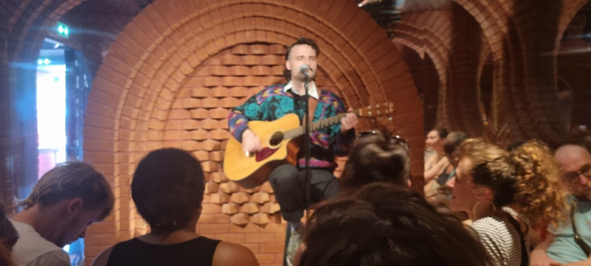

Se lancer
Vous écrivez dans votre coin et vous n'êtes jamais monté sur scène, ou à peine.
- Trouver son point de vue et son personnage
- Écrire ses cinq premières minutes
- Les répéter, les jouer, gérer le trac
- Choisir ses premiers open mics et plateaux
Paul apprend à écrire des blagues, à les tester devant un public et à improviser, y compris en chanson. En groupe ou en tête-à-tête.
Pour les jeunes humoristes qui veulent se lancer, ou qui jouent déjà et veulent passer un cap. Paul les accompagne en individuel, à partir de leurs propres textes.
Vous écrivez dans votre coin et vous n'êtes jamais monté sur scène, ou à peine.
Vous jouez régulièrement et vous voulez aller plus loin.
Durée, rythme et tarifs des séances : à préciser par Paul.
Paul a été responsable pédagogique de la classe de stand-up du Cours Florent. Il y enseigne aujourd'hui l'improvisation.
Il enseigne aussi l'improvisation musicale à la FMR Académie, avec laquelle il a joué au Festival d'Avignon 2026.
Il anime aussi des stages de stand-up pour amateurs et comédiens, notamment aux Ateliers Comédie à Paris.
Il a consacré un mémoire universitaire au Madame Sarfati Comedy Club et à la professionnalisation du stand-up en France. Il connaît donc le métier par la scène et par l'étude.

Pour écrire et jouer ses premières minutes, ou retravailler un passage qui ne prend pas.
Inventer une chanson sur scène, sans savoir chanter ni lire la musique.
Ateliers pour écoles de théâtre, troupes amateurs et entreprises.